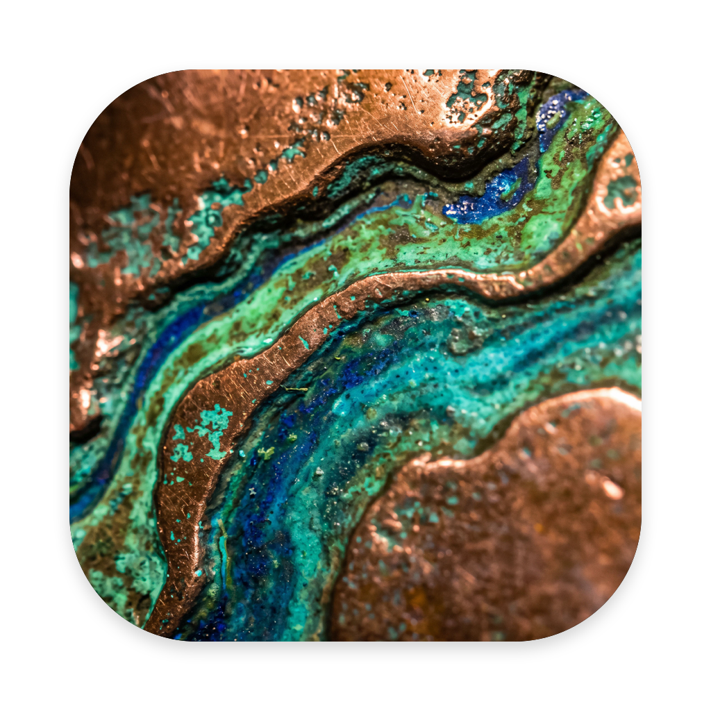
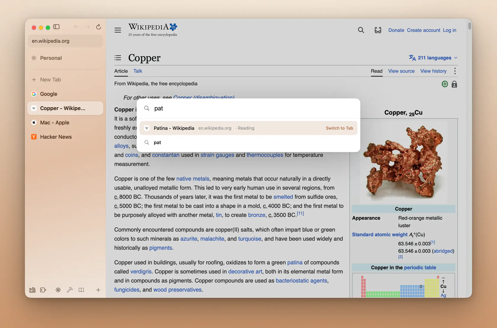
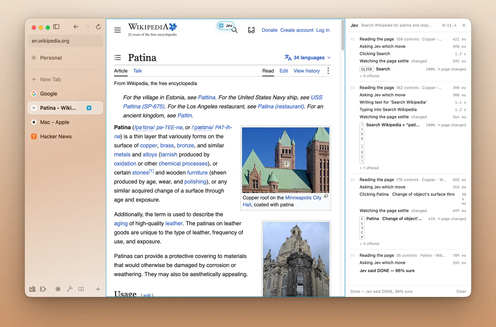
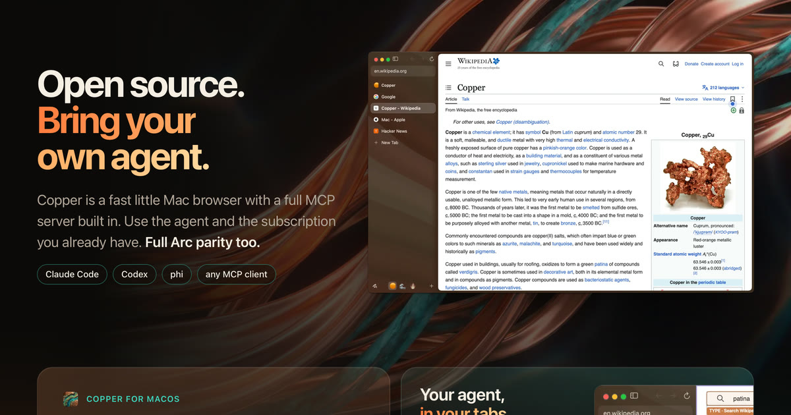

Copper, for the record.
The name, the icon, real screenshots and the facts. Use any of it to write about Copper; no need to ask.
Facts
| Name | Copper (one word, capital C) |
|---|---|
| What it is | An open source web browser for the Mac with an MCP server built in |
| Engine | WebKit, the engine in macOS |
| Runs on | macOS 14 or later, Apple Silicon or Intel. Windows and Linux builds too. |
| Price | Free |
| License | MIT |
| First version | 1.0, 23 September 2026 |
| Made by | Collin Rijock and Felipe Arce, first built at ShellHacks at FIU |
| Source | github.com/copper-browser/Copper |
| Website | copper.exowatt.com |
| Contact | GitHub Issues |
About Copper
Copy as is, or shorten.
Copper is a free, open source web browser for the Mac with an MCP server built in, so Claude Code, Codex or any MCP client can drive it on the subscription you already pay for.
Copper is a free, open source (MIT) web browser for the Mac, made by Collin Rijock and Felipe Arce. It runs on WebKit, the engine already in macOS, so it is a small download and opens fast. It has an MCP server built in: Claude Code, Codex, phi or any MCP client can read and drive real pages on the subscription you already pay for, and an agent never sees a password Copper filled. It brings over tabs, spaces, bookmarks, history and passwords from Arc, Chrome or Safari in one step, and adds Arc-style spaces, Chrome extensions, a built-in ad blocker, a shared canvas and Copper Cloud, a sync server you host yourself. Copper has no accounts, no analytics and no servers of its own.
Icon
A plate of weathered copper with a river of azurite and malachite across it, in Apple's rounded square. Use it whole: don't recolour, crop, stretch or add effects.

- copper-icon-1024.png 1024×1024, transparent
- icon.png 192×192


Screenshots
Every one is a real capture of Copper, not a mockup. Open one for the full size.
 The windowCopper on Wikipedia, sidebar in the Copper space’s animated theme, dark appearance. 1920×1200.
The windowCopper on Wikipedia, sidebar in the Copper space’s animated theme, dark appearance. 1920×1200. The sidebarA space’s tabs down the left and the page in the rest of the window. No toolbar. 2000×1250.
The sidebarA space’s tabs down the left and the page in the rest of the window. No toolbar. 2000×1250.
Tabs, ⌘K and spacesA frame from the tour of tabs, ⌘K and spaces. Dark: copper-motion-dark.webp. 1680×1110.
JevJev running one goal with its driver timeline open. Dark: copper-jev-dark.webp. 1680×1110. Jev on a real pageJev searching Wikipedia, every step in the timeline on the right. 2000×1250.
Jev on a real pageJev searching Wikipedia, every step in the timeline on the right. 2000×1250. Agents and BitwardenAn agent signs in with a saved account; it never sees the password. 2000×1250.
Agents and BitwardenAn agent signs in with a saved account; it never sees the password. 2000×1250. CanvasA shared, live canvas with stickies, arrows and a page. 2000×1250.
CanvasA shared, live canvas with stickies, arrows and a page. 2000×1250. Copper CloudThe one-line install of a sync server you run yourself. 2000×1250.
Copper CloudThe one-line install of a sync server you run yourself. 2000×1250.
Social cardThe 1200×630 card used for link previews. 1200×630.


Colours and type
The site's palette. Type is the Mac's own: SF Pro, and SF Mono for code.
- Copper
#A9461A - Copper, dark
#FF8A4C - Patina
#0F7A6B - Patina, dark
#3DD6BE - Paper
#F8F2EA - Night
#0C0A09